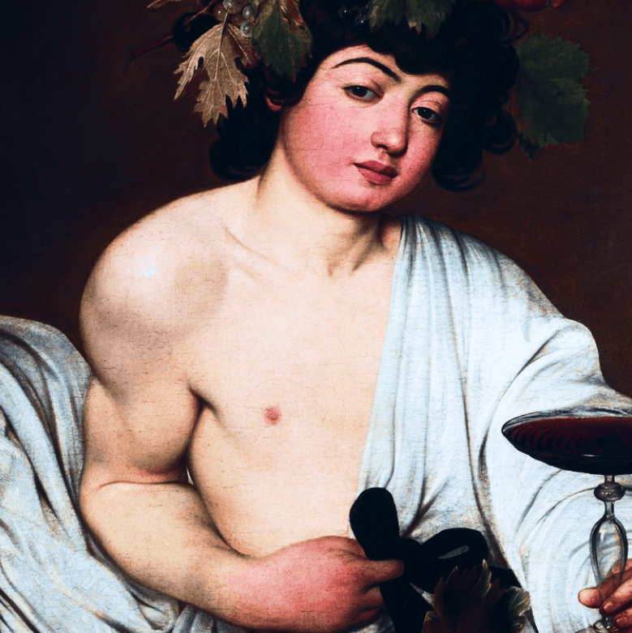

Boost Your
Social Life right
now
Pharetra blandit augue volutpat libero augue semper. Non diam neque
praesent sem
senectus mauris lectus a urna. Tortor pellentesque ipsum tincidunt enim.

About the project
Baco is an application that helps people find potential party to
be
enjoyed existing around them
Problem
Millions of bored, tired, and busy people would like to be
enjoying life.
The process of finding a cool place to hang out is often too time-
consuming
for a simple
uninformed person. They usually go ask their
mutual friend circle to know about what interesting
is going on at their
surroundness.
Solution
Make it easy to know what's going
on arround you
Reducing the time spent planning and
cool places
Announce Your Business!
With Baco you have the chance to show people
perfect
place to be gathering! Make public
your bar, pub, club, game house, and party
house!